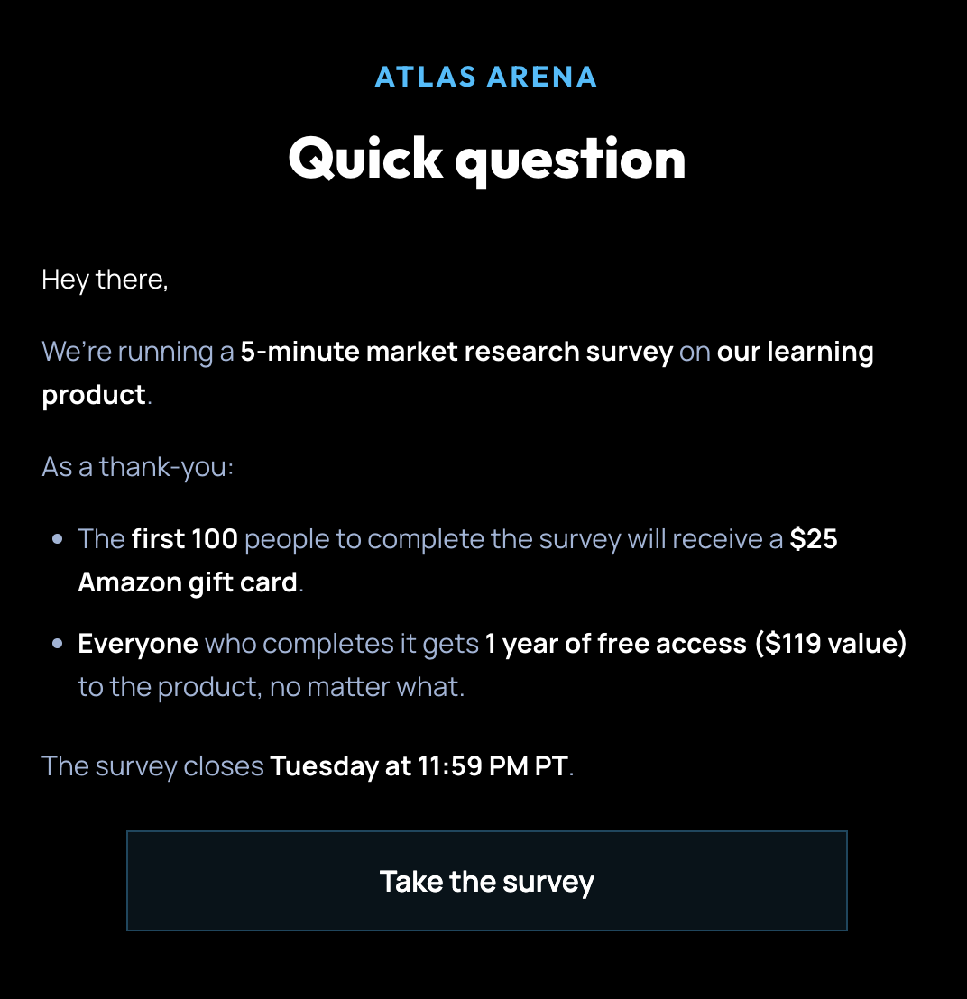
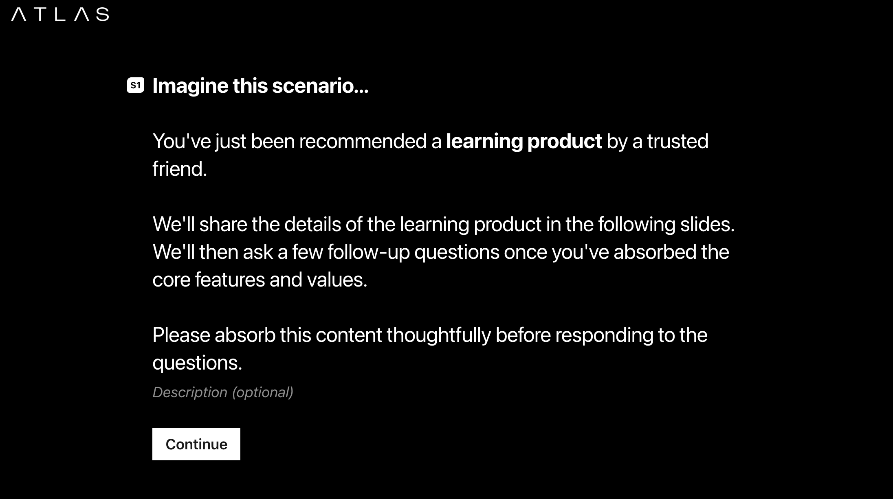
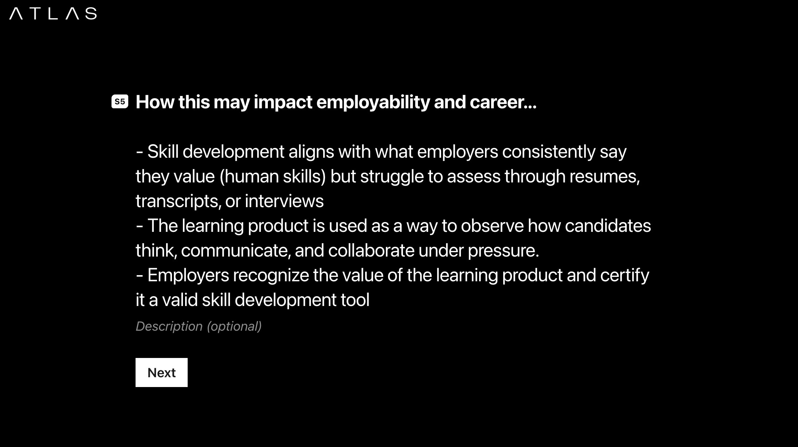
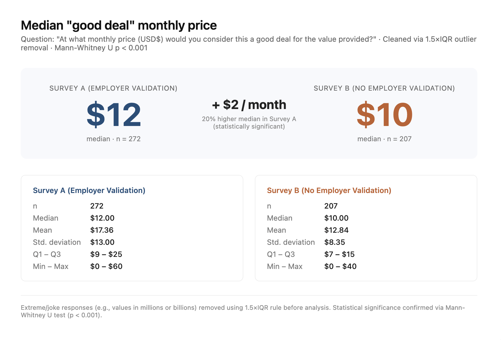
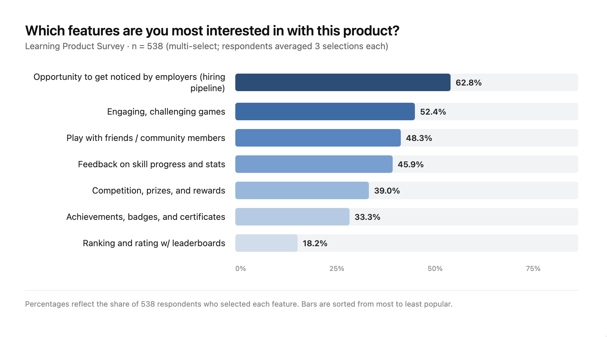

Case Study 01
Market research in edtech.
An A/B experimental study measuring how employer validation shapes the perceived value of a game-based learning product — and how the findings drove Atlas Arena's pivot to a Games-to-Jobs pipeline.
Executive Summary
Atlas Arena is a game-based learning platform that uses team-based thinking challenges to strengthen and measure soft skills. Through a randomized control trial with 538 participants, we tested whether framing the product around "employer validation" would shift perceived value. It did — significantly — and the data ultimately redirected the company's product strategy.
Background & Objectives
- Context: Atlas Arena originally positioned itself as a consumer product centered on competitive thinking games.
- Research question: Does explicit mention of employer partnerships increase the perceived monetary value and desirability of the product?
- Hypothesis: If users believe their gaming achievements are recognized by recruiters, their investment — both time and money — will increase.
Methodology
n = 538
- Design: Between-subjects randomized A/B split test.
- Group A (Experimental): Product description included "Validation from Employers."
- Group B (Control): Standard product description, no employer mention.
- Instrument: 5-minute Typeform survey measuring value perception, price sensitivity, and feature prioritization.
- Audience: Existing marketing leads from Atlas Arena's internal list.



Results & Data Analysis
The pricing gap.
When asked what monthly price would feel like a "good deal" for the product, the experimental group (with employer validation) reported a median of $12, compared to $10 in the control group — a 20% lift, statistically significant via Mann-Whitney U (p < 0.001).

When asked which features they were most interested in, "Opportunity to get noticed by employers (hiring pipeline)" emerged as the #1 ranked feature in both groups — surfacing a latent desire for professional outcomes even among participants who weren't prompted with employer messaging.

Interpretation
- Perceived ROI: Employer validation reframed the product from "entertainment spend" to "career investment" — justifying a higher price point.
- The validation loop: Gamers seek a tangible return on the time spent mastering a skill. When that return is recognition from real employers, the product crosses from a hobby to an investment.
Strategic Impact
The pivot.
Atlas Arena transitioned from a consumer gaming product to a B2B game-based assessment tool — measuring soft skills in candidates and predicting workplace performance for employer partners.
- Product evolution: Shifted from a general gaming platform to a dedicated "Games-to-Jobs" pipeline.
- Resource allocation: Engineering and BD roadmaps prioritized employer partnerships over new game modes.
- Marketing realignment: Brand voice moved from "Think to win." to "Prove your worth."
A lean 5-minute survey saved months of building toward the wrong value proposition — and demonstrated the power of data-driven decision-making in product-market fit.